|
| Home |
| FAQ |
| Quick Start Guide |
| Donate |
| File a bug |
ScratchTrack 0.5
Quick Start
Glossary - If you read anything, read this. Seriously. You'll be done in like five minutes.| Term |
Definition |
| Bucket Budgeting | Bucket
budeting is the concept of labeling buckets with expense names (i.e.
'dining', 'rent', 'phone', 'fun'),
placing money in those buckets at regular
intervals, and then paying expenses from those
buckets as they occur. When a bucket is empty, you're done
spending in that category until the bucket is refilled. The key
concept in bucket budgeting is that
you don't spend money you don't have. |
| Account |
An
account represents money or debt. Checking, savings, and credit cards are all valid account types in ScratchTrack. |
| Expense |
An
expense is any kind of outflow of money. An expense is paid from an account and attributed to a bucket. |
| Bucket |
A bucket is a place to assign money for upcoming
expenses. You'll create buckets for different categories of expenses. Buckets are
figurative and money stays in accounts until spent. |
| In-budget account |
An in-budget account is an account whose balance can be assigned to buckets. |
| Budgetable Dollars |
Budgetable
dollars is the sum of the balances of all in-budget accounts,
minus any money already assigned to buckets. When money is assigned to
a bucket, the money stays in the account and the account's balance
doesn't change, but budgetable dollars decreases by that amount. |
| Folder |
Folders
are used to organize buckets. I have three
folders in my personal budget. The first two folders align
with paycheck dates and are titled "15th" and "31st". Those folders
contain buckets that I contribute to each month and I fill them when
the associated paycheck arrives.The third folder is titled "out of
band" and contains buckets that I don't fill on a regular basis. |
| Transaction |
A record
of any cash flow |
Workflow walkthroughs - You should probably read this too
Walkthrough one: Fred sets up ScratchTrack
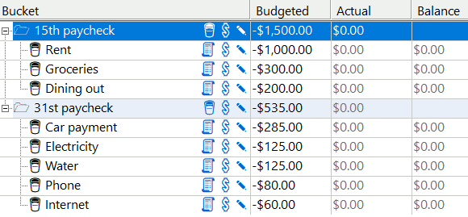 Here's ScratchTrack's summary of Fred's folders and balance: 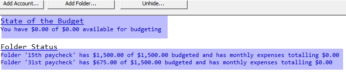 Fred set the checking account's initial balance to zero, and he hasn't deposited any money, so he doesn't hae any money available for budgeting. As noted above, fred has created two folders, each with an expent limit of $1,500. He's added buckets in those folders and has assigned the buckets budgeted amounts. The '15th' folder is completely allocaed, and there's still room left in the 31st folder. |
Walkthrough two: Fred gets paid
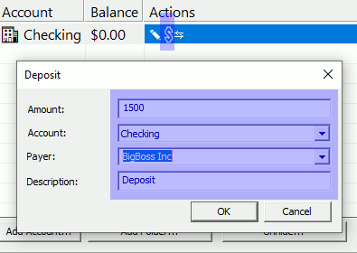
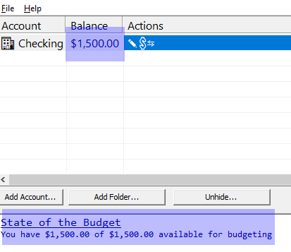 |
| Walkthrough three: Fred assigns money to buckets It's the 15th. Fred has been paid. Fred is ready to assign money to the buckets in the '15th' folder. Fred has two ways to fill his buckets. Option one - fill all the buckets in the folder If Fred clicks the 'Assign Money' icon next to the folder (or selects that option after right clicking on the folder), Fred can fill all the buckets in the 15th folder in one shot. There are two ways to fill. The first option adds the budgeted amount to each bucket. If a bucket already has money in it, it will be over-funded. This is useful if you're saving for a long-term expense, like a car insurance that's paid twice a year. The other option sets the buckets to their budgeted amount. If dining, which has a budget of $200, already has $100 in it, option one will fill the bucket to $300, and option two will fill the bucket to $200. 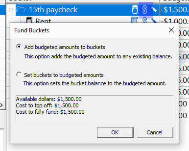 Option two - fill buckets individually If Fred clicks the 'Assign Money' icon next to the bucket (or right clicks), Fred can fill an bucket individually. 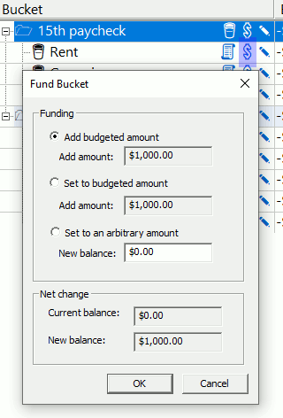 Fred has elected to fill all his buckets to their budgeted amounts 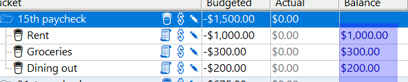 ...and the state of the budget now indicates that all budgetable dollars have been assigned to buckets 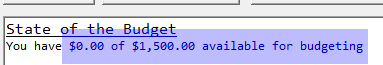 |
| Walkthrough four: Fred dines at McDonald's Fred is feeling rich and treats himself to McDonald's. He spends $15.37. He records the transaction in ScratchTrack by clicking the 'Record Expense' icon next to the bucket. He could've also right clicked the bucket. 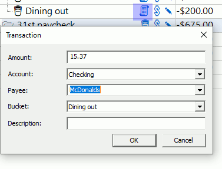 ScratchTrack shows Fred his total dining expenses and remaining funds 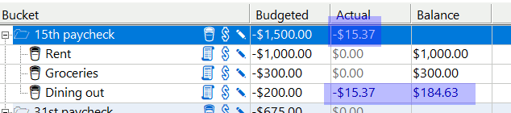 Fred can also see the transaction in the transaction list. If he made a typo, he can edit it by double clicking or right clickng the transaction. 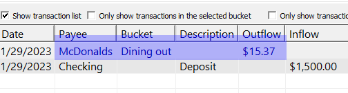 |
Congratulations! At this point, you know the general worklfow, but there's one more to cover: Credit Cards.
| Walkthrough five: Fred gets a credit card Fred has learned that he can get 5% back on his Amazon purchases if he pays with an Amazon credit card. This sounds good to Fred (and I agree!) so he gets one. 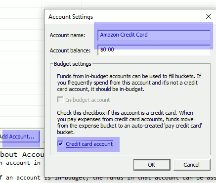 Fred adds the credit card account the same was as he added his other accounts, but this time he checks 'Credit Card Account' When he does this, a new folder and bucket is created. These items are not editable. 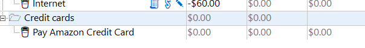 When Fred pays for something with his Amazon credit card, he records it in the associated bucket. Let's say he's ordered ramen noodles from Amazon. 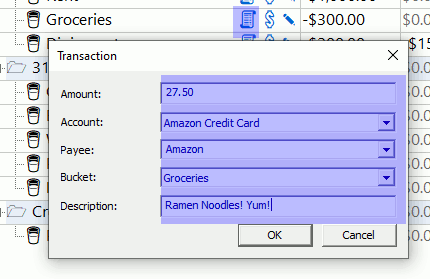 Fred has recorded the expense in the 'groceries' bucket and has selected his Amazon credit card as the payment account.  Two things have happened:
After this transaction, the balance of the credit card account the credit card bucket match: 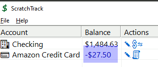 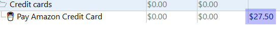 |
| Walkthrough five: Fred's credit card bill is due The time has come for Fred to pay his credit card bill. He hasn't made any additional credit card purchases, so the bill is $27.50. Fred clicks the 'Pay Credit Card' icon next to the Amazon account. He also could've right clicked to get there. He sets the payment amount $27.50.  After payment, the checking balance is reduced, and the credit card balance is cleared.  The money from the credit card payment bucket is used automatically for this payment and it's balance is back at zero:  As is the case with all transactions, it's displayed in the transaction list and can be edited by right click or double click: |